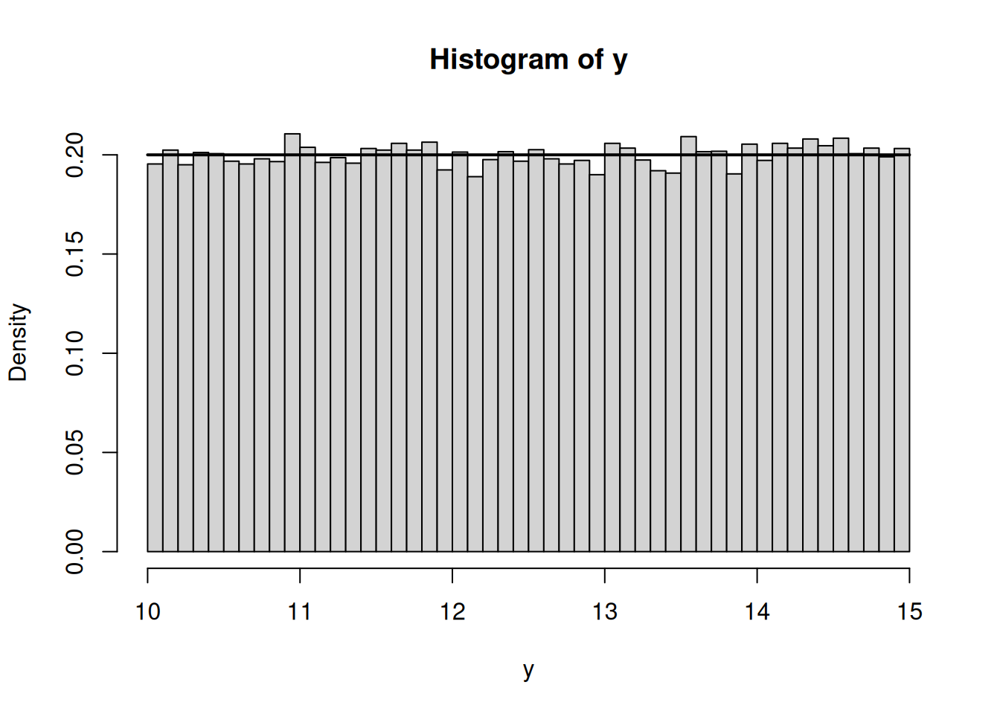
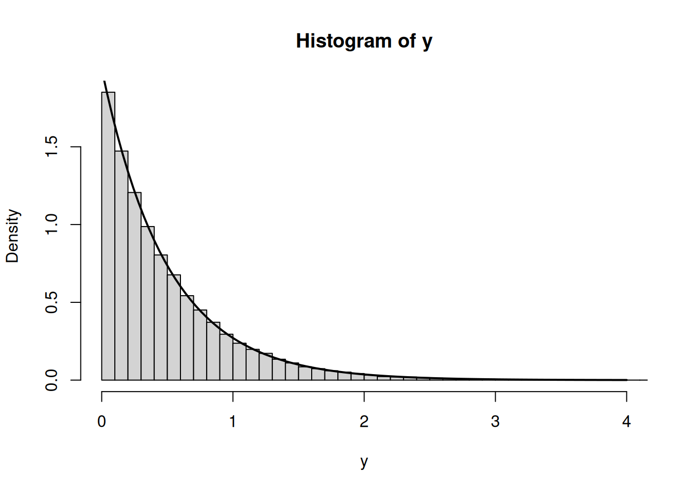
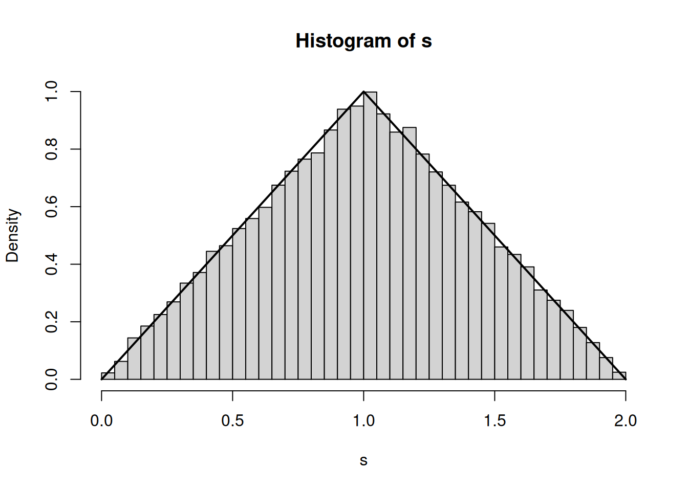

x <- -2:2
px <- c(.1,.2,.4,.2,.1)
y <- x^2
aggregate(px, by = list(Y = y), FUN = sum) Y x
1 0 0.4
2 1 0.4
3 4 0.2Al finalizar este capítulo, el estudiante será capaz de:
En aplicaciones rara vez interesa únicamente la variable medida originalmente. Si \(X\) representa longitud, tiempo, voltaje o concentración, pueden interesar cantidades derivadas como
\[ Y=X^2,\qquad Y=aX+b,\qquad Y=\log X, \]
o combinaciones de varias variables como
\[ S=X+Y. \]
El problema consiste en determinar la distribución de la nueva variable.
Si \(X\) es discreta y \(Y=g(X)\), entonces
\[ P(Y=y)=\sum_{x:g(x)=y}P(X=x). \]
La suma es importante cuando diferentes valores de \(X\) producen el mismo valor de \(Y\).
Sea \(X\) con valores \(-2,-1,0,1,2\) y probabilidades \(0.1,0.2,0.4,0.2,0.1\). Si
\[ Y=X^2, \]
entonces \(Y\) toma valores \(0,1,4\) y
\[ P(Y=0)=0.4, \]
\[ P(Y=1)=P(X=-1)+P(X=1)=0.4, \]
\[ P(Y=4)=P(X=-2)+P(X=2)=0.2. \]
x <- -2:2
px <- c(.1,.2,.4,.2,.1)
y <- x^2
aggregate(px, by = list(Y = y), FUN = sum) Y x
1 0 0.4
2 1 0.4
3 4 0.2Para una variable continua, un método general consiste en calcular
\[ F_Y(y)=P(Y\le y)=P(g(X)\le y) \]
y después derivar:
\[ f_Y(y)=\frac{d}{dy}F_Y(y). \]
Este procedimiento es especialmente útil cuando la transformación no es uno a uno.
Si \(Y=g(X)\) y \(g\) es estrictamente monótona y diferenciable, con inversa
\[ x=g^{-1}(y), \]
entonces
\[ \boxed{f_Y(y)=f_X(g^{-1}(y))\left|\frac{d}{dy}g^{-1}(y)\right|}. \]
El valor absoluto garantiza una densidad no negativa.
Sea
\[ Y=aX+b,\qquad a\ne0. \]
Entonces
\[ x=\frac{y-b}{a}, \]
y
\[ \boxed{f_Y(y)=\frac1{|a|}f_X\left(\frac{y-b}{a}\right)}. \]
Además,
\[ E[Y]=aE[X]+b, \]
\[ \operatorname{Var}(Y)=a^2\operatorname{Var}(X). \]
Si
\[ X\sim U(0,1),\qquad Y=10+5X, \]
entonces
\[ Y\sim U(10,15). \]
set.seed(2026)
x <- runif(50000)
y <- 10 + 5*x
hist(y, probability = TRUE, breaks = 40)
curve(dunif(x, 10, 15), add = TRUE, lwd = 2)
Sea
\[ X\sim U(0,1),\qquad Y=-\frac1\lambda\log X. \]
Entonces \(Y\) tiene distribución exponencial con tasa \(\lambda\).
Este resultado constituye la base del método de transformada inversa para simulación.
set.seed(2026)
lambda <- 2
u <- runif(50000)
y <- -log(u)/lambda
hist(y, probability = TRUE, breaks = 60, xlim = c(0,4))
curve(dexp(x, rate = lambda), add = TRUE, lwd = 2)
Si una transformación posee varias ramas inversas, deben sumarse las contribuciones correspondientes.
Si las soluciones de
\[ y=g(x) \]
son \(x_1(y),\ldots,x_k(y)\), entonces, bajo condiciones regulares,
\[ \boxed{f_Y(y)=\sum_{j=1}^k f_X(x_j(y))\left|\frac{dx_j}{dy}\right|}. \]
Sea
\[ X\sim U(-1,1),\qquad Y=X^2. \]
Para \(0<y<1\) existen dos ramas:
\[ x_1=\sqrt y,\qquad x_2=-\sqrt y. \]
Como \(f_X(x)=1/2\),
\[ f_Y(y)=\frac12\frac1{2\sqrt y}+\frac12\frac1{2\sqrt y} =\boxed{\frac1{2\sqrt y}},\qquad0<y<1. \]
La misma conclusión se obtiene mediante la CDF:
\[ F_Y(y)=P(X^2\le y)=P(-\sqrt y\le X\le\sqrt y)=\sqrt y. \]
Si
\[ X\sim N(\mu,\sigma^2), \]
y
\[ Z=\frac{X-\mu}{\sigma}, \]
entonces
\[ \boxed{Z\sim N(0,1)}. \]
Esta estandarización es uno de los ejemplos más importantes de transformación lineal.
Si \(X\) y \(Y\) son discretas e independientes y
\[ S=X+Y, \]
entonces
\[ \boxed{p_S(s)=\sum_x p_X(x)p_Y(s-x)}. \]
p <- rep(1/6, 6)
ps <- convolve(p, rev(p), type = "open")
s <- 2:12
data.frame(Suma = s, Probabilidad = ps) Suma Probabilidad
1 2 0.02777778
2 3 0.05555556
3 4 0.08333333
4 5 0.11111111
5 6 0.13888889
6 7 0.16666667
7 8 0.13888889
8 9 0.11111111
9 10 0.08333333
10 11 0.05555556
11 12 0.02777778La distribución no es uniforme: el valor 7 posee mayor probabilidad porque puede producirse de más maneras.
Si \(X\) y \(Y\) son continuas e independientes,
\[ S=X+Y \]
tiene densidad
\[ \boxed{f_S(s)=\int_{-\infty}^{\infty}f_X(x)f_Y(s-x)\,dx}. \]
Sean
\[ X,Y\stackrel{ind}{\sim}U(0,1). \]
Entonces \(S=X+Y\) tiene densidad triangular:
\[ f_S(s)= \begin{cases} s,&0<s<1,\\ 2-s,&1\le s<2,\\ 0,&\text{en otro caso}. \end{cases} \]
set.seed(2026)
s <- runif(50000) + runif(50000)
hist(s, probability = TRUE, breaks = 50)
curve(ifelse(x < 0 | x > 2, 0,
ifelse(x < 1, x, 2-x)),
from = 0, to = 2, add = TRUE, lwd = 2)
Sean
\[ U=g_1(X,Y),\qquad V=g_2(X,Y). \]
Si la transformación es uno a uno y suficientemente regular, se obtiene la inversa
\[ X=x(u,v),\qquad Y=y(u,v). \]
La densidad conjunta transformada es
\[ \boxed{ f_{U,V}(u,v)=f_{X,Y}(x(u,v),y(u,v)) \left|\frac{\partial(x,y)}{\partial(u,v)}\right|. } \]
El determinante es el Jacobiano de la transformación inversa.
Una transformación cambia áreas. Localmente,
\[ dx\,dy \approx \left|\frac{\partial(x,y)}{\partial(u,v)}\right|du\,dv. \]
El Jacobiano corrige precisamente esa deformación para conservar probabilidad.
Sean
\[ U=X+Y,\qquad V=X. \]
La transformación inversa es
\[ X=V,\qquad Y=U-V. \]
El Jacobiano inverso tiene valor absoluto 1, por lo que
\[ f_{U,V}(u,v)=f_{X,Y}(v,u-v). \]
Integrando respecto de \(v\) se recupera la fórmula de convolución para \(U=X+Y\).
La simulación no sustituye la demostración analítica, pero permite comprobar resultados y detectar errores de soporte o parametrización.
Una estrategia recomendable es:
El recurso interactivo permite elegir entre varias transformaciones:
Los deslizadores modifican parámetros y muestran simultáneamente la distribución original, la transformación geométrica y la distribución resultante.
Construye puntos \((x,f_X(x))\) para una uniforme y utiliza deslizadores \(a\) y \(b\) en
\[ y=ax+b. \]
Observa cómo cambia el soporte y cómo el factor \(1/|a|\) conserva el área total bajo la densidad.
Representa
\[ y=x^2 \]
para \(-1<x<1\). Elige un valor \(y_0\) y muestra sus dos preimágenes
\[ -\sqrt{y_0},\qquad\sqrt{y_0}. \]
Esto permite visualizar por qué deben sumarse dos contribuciones a la densidad transformada.
Para una transformación monótona,
\[ f_Y(y)=f_X(g^{-1}(y)) \left|\frac{d}{dy}g^{-1}(y)\right|. \]
Para varias ramas inversas,
\[ f_Y(y)=\sum_jf_X(x_j(y)) \left|\frac{dx_j}{dy}\right|. \]
Para la suma de variables independientes,
\[ f_{X+Y}(s)=\int f_X(x)f_Y(s-x)\,dx. \]
Para transformaciones bidimensionales,
\[ f_{U,V}(u,v)=f_{X,Y}(x(u,v),y(u,v)) \left|\frac{\partial(x,y)}{\partial(u,v)}\right|. \]
| Material | Formato | Acceso | Propósito |
|---|---|---|---|
| Cuaderno de Google Colab | Notebook interactivo (R) | Abrir en Colab | Ejecutar transformaciones, convoluciones y simulaciones. |
| Cuaderno de R | R Markdown | Abrir cuaderno R | Reproducir cálculos y gráficas en R/RStudio. |
| Interactivo | HTML / GeoGebra | Abrir recurso | Explorar visualmente transformaciones y distribuciones resultantes. |
| Presentación | PDF / PPT | Próximamente | Se incorporará cuando se proporcionen los enlaces. |
| Video | Video | Próximamente | Explicación audiovisual complementaria. |
| Infografía | Imagen / PDF | Próximamente | Síntesis visual del cambio de variable y la convolución. |
El tratamiento de transformaciones y distribuciones derivadas sigue la presentación de los textos principales citados en la bibliografía general, especialmente Walpole, Devore, Montgomery y Runger, Miller y Freund, y Kerns para el enfoque computacional en R. Los ejemplos, ejercicios y código son de elaboración original.